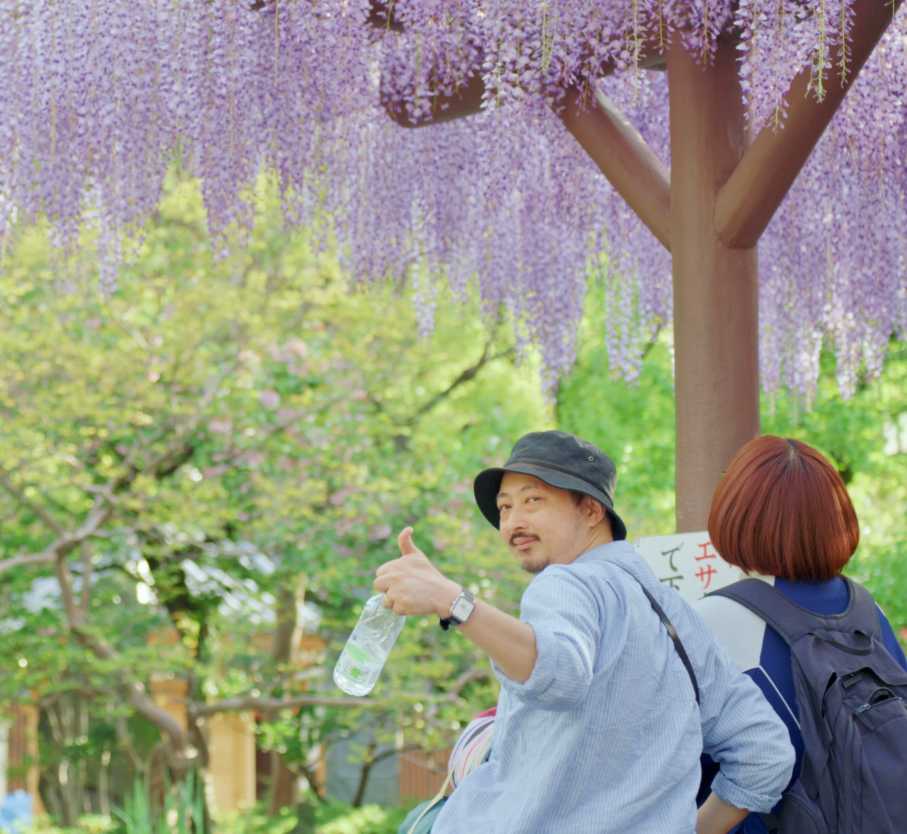
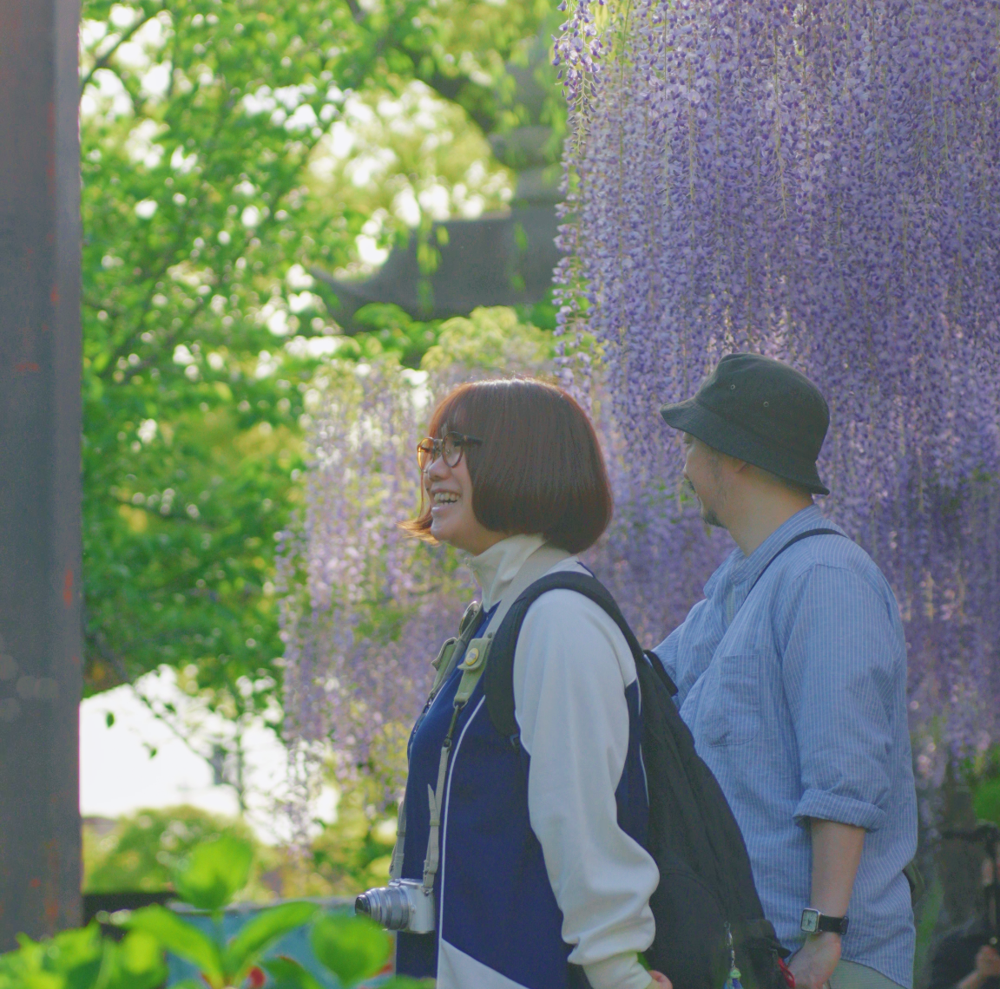
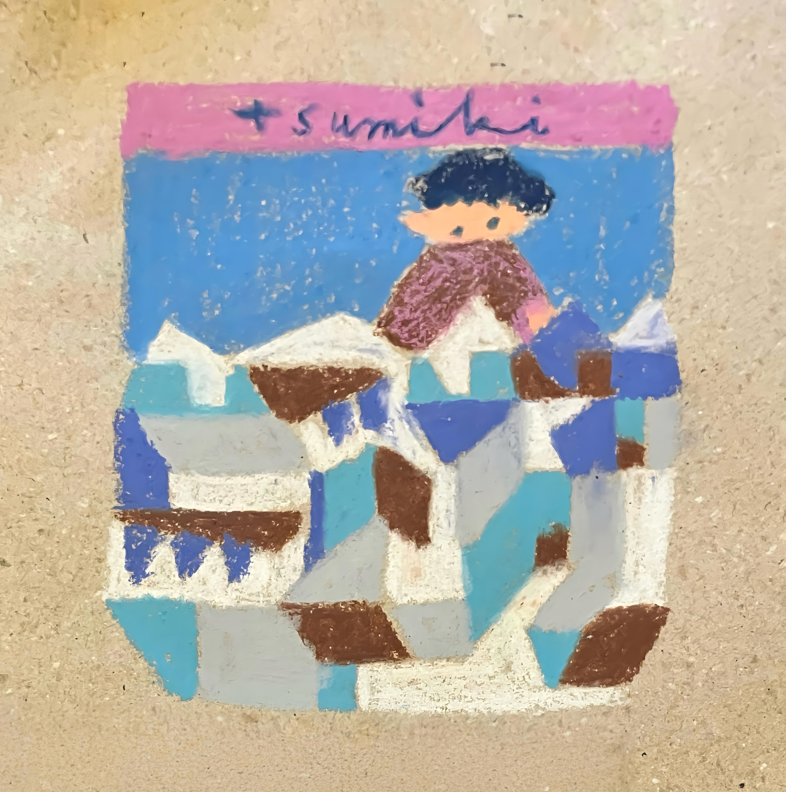
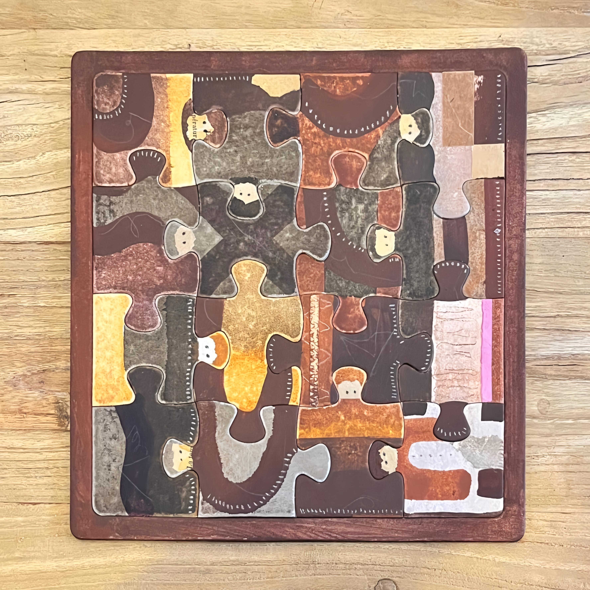

Guitarist / Songwriter
Kenta

楽曲の成り立ち
今回、モチーフとして『tsumiki』と『puzzle』を選ばれたきっかけは何だったのでしょうか？
八王子にあるcoffee ritmos店主のリトさんの描いた「tsumiki」のイラストを見せてもらった時でした。「これGomafu...の雰囲気に合いそうだよね」とリトさんに言ってもらったのをキッカケに『tsumiki』を作詞しました。歌詞のイメージがどんどん沸いて2日程で完成しました。可愛らしいイラストに反して内省的な歌詞になりましたが、リトさんにも気に入ってもらえてひと安心しました。せっかくなので他のリトさんの作品をモチーフに歌詞を書こうと思いcoffee ritmosのSNSを見ていたら「puzzle」の作品を見つけました。ピースがひとの絵になっていて組み合わさると手を繋いでいるよな印象を受けます。「これだ！」と思い、繋がりの中での個を意識した歌詞を書いてみました。

puzzleモチーフ — 繋がりの中での個
歌詞の意図
2つのモチーフを通して、どのようなイメージを込めたのでしょうか？
『tsumiki』はベクトルが内に向いている歌で、個を研ぎ澄まし高めていく様子を積み上げていく行為になぞらえ「縦の立体」と考えました。また過去の自分の自由さと現在の固定観念を対比しようと時間軸を意識しました。
対して『puzzle』はベクトルが外に向いている歌で、居場所やちょうどいい距離感を大切にする様子をなぞらえ「横の平面」を意識して書いてみました。
「縦の立体」と「横の平面」。2曲が互いを補い合い、ひとつの世界を形づくる。
ギターと構成と仕掛け
その世界観を表現するために、サウンド面ではどのような工夫をしましたか？
『tsumiki』ではあえて不安定なコードや「間」を使い、素朴さや危うさを表現しました。逆に『puzzle』では、カッティングを「ピースがハマる音」に見立てたり、転調でポジティブなトーンの変化をつけたりと、それぞれのモチーフが音から立ち上がるように工夫しています。
また2曲を通しての一体感も欲しいと思い、歌詞の出だしを同じメロディにしてみました。
Vocalist / Songwriter
ぽそ

Track 01
tsumiki
子どものころの想像力。あのワクワクは、今のわたしたちの原動力になるはずだと、信じながら歌いました。

『tsumiki』に込めた想い
積み木をひとりで積み上げながら、頭の中に大きな国や世界が広がっていく。子どものころ、想像はそのまま現実のように感じられました。
今でも、毎日こっそりそういう想像をしている大人は、きっとたくさんいると思っています。わたしもそのひとりで。言葉にしたら笑われてしまうかもしれないから、大人だからと、胸の奥にそっとしまってしまう。
あのワクワクは、今のわたしたちにもきっと原動力になる。そう信じながら歌いました。
レコーディングを振り返って
同時録音だったのでプレッシャーは少しありましたが、ライブ感覚で歌えたぶん、感情は乗せやすかったです。
一方でレコーディングならではの難しさもあって——どこかしら「う〜ん……」と気になる箇所が出てきてしまうもので。最終的にOKとしたテイクは、歌い終わったあとに「今日の自分の最高はここだ」と思えたから。
これからこの曲を歌い続けていくなかで、もっと深まっていくはず。乞うご期待。
Track 02
puzzle
周りのみんなをパズルに置き換えながら、そしてわたし自身のピースを見つけながら、歌いました。

『puzzle』に込めた想い
けんちゃんがギターを録っている時間、その音色を聴きながら、わたしは頭の中でたくさんのピースのことを考えていました。周りのみんなをパズルに置き換えて。
「あの子は角のピースかな。真っ先に配置されて、みんなの軸になってくれそう。」
「あの人は複雑な模様のピース。後回しにされがちだけど、だからこそ味わいがある。」
「あの人は、迷わず配置されるピース。キラキラ輝いていて、憧れる。」
そしてわたし自身は——2番に出てくる、机の端にいる迷子のピースだと思っています。いつも端っこにいて、人見知りで、自分から動くのが苦手で、周りの様子をうかがってばかり。
「他のピースじゃなくて 君だけが埋められる場所」
— kenta の言葉を借りて、自分自身へエールを送りながら歌いました。この歌が、同じように迷子になっているだれかに届いて、不安な気持ちが少しでも軽くなるなら。それが、いちばんの願いです。
Recording Engineer
MAN

Recording session at crotchet / studio
活動の軸について
多方面で表現されていますが、ご自身の中で「表現の核」と感じている活動はありますか？
「表現の核となる活動」となると、間違いなく自分がやっているバンドである1000say（ア・サウザンド・セイ）となりますね。メインコンポーザーを務めていて、ステージではギター・ボーカル・シンセを担当しています。現在はスローペースな活動となっていますが、これまでに5枚のアルバムをリリース、各配信サービスやYouTubeでも音源が聴けるのでチェックいただけたら幸いです。
そして店長兼音響を任せていただいてるcrotchet / cafeでは、アーティストとして得ることのできた経験や知見を良いカタチでフィードバックしていけたら、と常々考えています。
ルーツと影響について
音作りや音楽観において、一番影響を受けたアーティストや作品はいますか？
プレイヤーとして影響を受けた作品は数限りないですので割愛します。今回はエンジニアという立場で関わらせていただいたので、その側面から尊敬を持って意識している人物を挙げると、安宅秀紀さんですね。1000sayもレコーディングで度々お世話になってきた方で、近年はトラックメイカーや音楽監督としても活躍されています。
2度目のレコーディングを経て
前回と比較して、Gomafu...の演奏をどう感じましたか？
前作は3曲、それぞれが異なった方向性を持っていて、Gomafu…の「幅」をアピールできるものだったかと思います。それに対して今作はタイトルの並びからしてコンセプティブ、Gomafu…の「芯」が貫かれた作風で、演奏の雰囲気もそこに寄り添ったものに感じました。よりプライベート感/ベッドルーム感にフォーカスした、というか。

Members — close up
Recording Approach
手法とアプローチ
Track 01
tsumiki
「同時録音」というアプローチ。クリックなしの一発録りが生み出す、2人のケミストリー。
この手法の強み
一発録りだからこそ生まれた「化学反応の瞬間」とは？
LIVE録音とほぼ同じスタイルですから、Gomafu…のお二人により自然体に近い雰囲気で演奏いただけたのではないでしょうか。特に『tsumiki』は緩急や強弱の波がある楽曲ですので、一発録りのメリットは大きかったと思います。サビのエモーショナルな盛り上がりなんか特にそうですね。
現場の難しさ
エンジニアとして一番神経を研ぎ澄ませたポイントは？
今回、RECに使用したcrotchet / studioの録音スペースはセパレートされているワケではありませんので、月並みですが音のカブりには気を遣いました。kentaさんには結局コントロールルームで弾いてもらいました。
またクリック不使用ですのでパンチインは一切なし、適度な緊張感を保つことが重要でした。
Track 02
puzzle
「別撮り」という精密な構築。一音ずつ積み上げることで生まれる、繊細な表情。
追求できたこだわり
別録りだからこそ追い込めた、ギターとボーカルのニュアンスとは？
せっかくの別録りですので、『puzzle』のギターはLINEに加えてチャレンジとしてMICも立てました。結果的にはミュートした方が音像がクリアだったので使用しませんでしたが。パーカッシブなプレイが肝となってるアレンジです、クリックの有用性はあったのでは、と。ぽっさんも既にOKテイクになっているギターに合わせて歌えるので、声の乗せ方に関してはとても早く細かい調整ができていたように思います。

Studio equipment — crotchet / studio
Sound Identity
Gomafu... の不変の核
サウンドのアイデンティティ
2曲に共通して流れている「これぞGomafu...」という音の芯は？
録音手法の違いから『tsumiki』は2人が向き合ってるイメージ、『puzzle』は2人が同じ方向をみているイメージ、となるかな？と思っていましたが実際は逆の印象となりました。
ぽっさんの〝柔らかで伸びやか〟を基調としつつハリのある歌声、それを支えるkentaさんの器用だけど〝失われない素朴さ〟があるギター、それが全て、それで完成。2曲ともキャッチーかつ心に響く歌詞が秀逸です。あくまで日常の延長上にある等身大なメッセージを、最も伝わりやすいスタイルで届けられるところにユニットの強みがあると思います。
とはいえ、今度はバンドアレンジの楽曲も録ってみたいですけどね！
「ぽっさんの柔らかで伸びやかな歌声、kentaさんの失われない素朴さのギター。それが全て、それで完成。」
— MAN (Recording Engineer)手応えを感じた瞬間
全行程を通じて、「完璧にハマった！」と一番手応えを感じたポイントとは？
前回のRECでは使用しなかったアナログのアウトボード、試してみたらドンピシャでした。中域の密度が濃くなって、広がりを保ちつつもムギュッとまとまりのある仕上がりになってよかったです。
あとは今回、メーカー代理店さんからレンタルさせてもらったヘッドフォンも併用してミックスしたのですが、とてもフラットで解像度が高く、モニターとして素晴らしかったので個人的に購入しちゃいました。